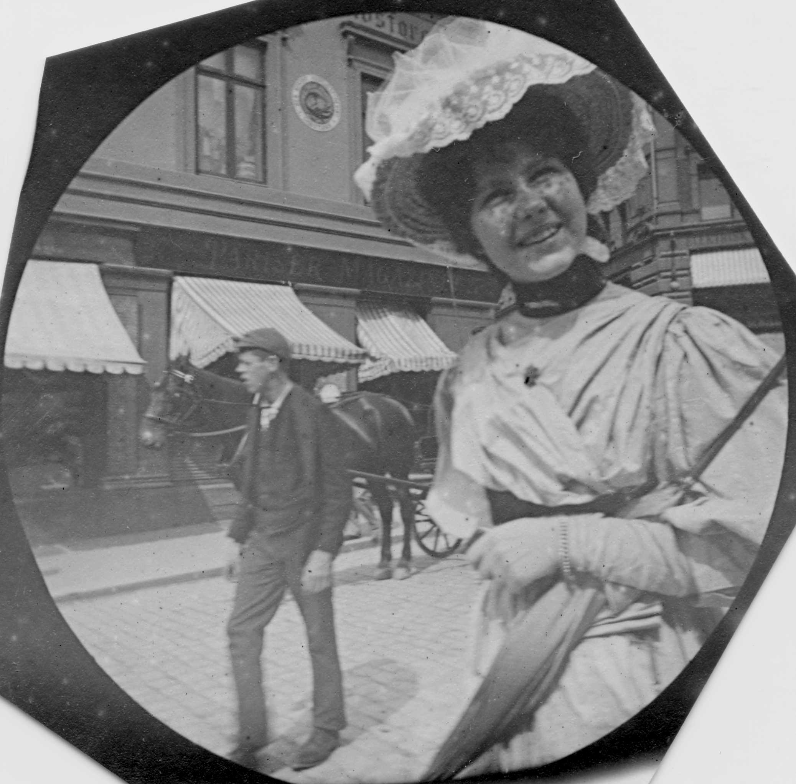

← to previous entry to next entry →
Beautiful People, and Soulmates
Entry 568, 2023/2/19
What is Beauty?
Internal beauty—the only kind that matters. What makes you think you're special when you smile?
Beauty is Virtue; Virtue is Knowledge; Knowledge is Truth; Truth is the Universe.
Beauty is the Universe.
How can Beautiful People?
How can beautiful people live in such a terrible world? Where do they go?
It's so hard for me to imagine all the beautiful people living their lives just as normal people do, and especially going outside into the terrible world, and experiencing all the normal terribleness that all of the other people do too. All the beautiful people in the world deserve to live in beauty—in a utopia. Where is that?
How can beautiful people live in such a terrible world? Where do they go?
Where did all of the beauty go in the world? Was it ever there to begin with? I think, for all that modern society is good for, there is just as much that it isn't good for, if not even more. And the areas where it suffers are the more important of them. Often I think about, and wish to live in, the Victorian Era. I recently found a large collection of 483 candid photos from around 1895, and they transport me to the era and make me wish more than ever that I had lived it. But I haven't, and I never can, and I should try to accept that's just how things are. Beauty gone forever and never to return—never lived again. All the ones who have are dead.

How can beautiful people live in such a terrible world? Where do they go?
How was the world allowed to get to where it is? So much destruction, and pain, and ugliness, and hardship—it's all pointless.
Marcus Aurelius, Meditations 5:33
The things we want in life are empty, stale, and trivial. Dogs snarling at each other. Quarreling children—laughing and then
bursting into tears a moment later. Trust, shame, justice, truth—"gone from the earth and only found in heaven." Why are you
still here?
Why does death have to be a natural thing? Why do even the beautiful people have to die? How can beautiful people live in such a terrible world? Where do they go? Where do they live? How do beautiful people deal with the ugliness around them, when they should be and deserve to be surrounded by beauty, of the same caliber as them?
On Soulmates
Can soulmates exist? Is there someone out there who's perfect for me? Would I know it the moment I saw her, or would it require something further?
I think, for every Beautiful person, there is another Beautiful person as their soulmate. Am I a beautiful person? And if I am, or if I become one, then how do I find my other? Should I even want to find my other? If I am a beautiful person, then I should be content with myself.
Do beautiful people exist? Maybe not. Maybe there is no beauty in the world; and no soulmates. And the world is all ugliness, and despair. Why am I still here?